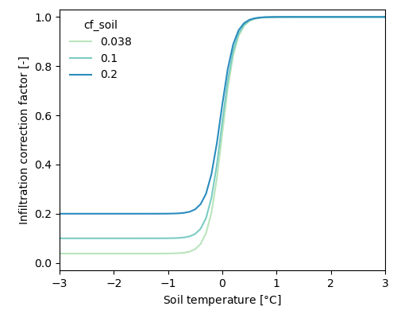

SBM
Introduction
The SBM vertical concept has its roots in the Topog_SBM model but has had considerable changes over time. The main differences are:
- The unsaturated zone can be split-up in different layers
- The addition of evapotranspiration losses
- The addition of a capillary rise
The sections below describe the working of the SBM vertical concept in more detail.
Precipitation
The division between solid and liquid precipitation (snowfall and rainfall, respectively) is performed based on the air temperature. If the temperature is below a threshold temperature (tt), precipitation will fall as snow. A interval parameter (tti) defines the range over which precipitation is partly falling as snow, and partly as rain. Snowfall is added to the snowpack, where it is subject to melting and refreezing (see the section on snow and glaciers). The amount of rainfall is subject to interception, and ultimately becomes available for evaporation and/or soil processes.

Division between snow and precipitation based on the threshold temperature
Rainfall interception
Two different interception models are available: the analytical Gash model, and the modified Rutter model. The simulation timestep defines which interception model is used, where daily (or larger) timesteps use the Gash model, and timesteps smaller than daily use the modified Rutter model.
The analytical (Gash) model (Gash, 1979)
The analytical model of rainfall interception is based on Rutter’s numerical model. The simplifications that introduced allow the model to be applied on a daily basis, although a storm-based approach will yield better results in situations with more than one storm per day. The amount of water needed to completely saturate the canopy is defined as:
\[P'=\frac{-\overline{R}S}{\overline{E}_{w}}ln\left[1-\frac{\overline{E}_{w}}{\overline{R}}(1-p-p_{t})^{-1}\right]\]
where $\overline{R}$ is the average precipitation intensity on a saturated canopy and $\overline{E}_{w}$ the average evaporation from the wet canopy and with the vegetation parameters $S$, $p$ and $p_t$ as defined previously. The model uses a series of expressions to calculate the interception loss during different phases of a storm. An analytical integration of the total evaporation and rainfall under saturated canopy conditions is then done for each storm to determine average values of $\overline{E}_{w}$ and $\overline{R}$. The total evaporation from the canopy (the total interception loss) is calculated as the sum of the components listed in the table below. Interception losses from the stems are calculated for days with $P\geq S_{t}/p_{t}$. $p_t$ and $S_t$ are small and neglected.
Table: Formulation of the components of interception loss according to Gash:
| Components | Interception loss |
|---|---|
| For $m$ small storms ($P_{g}<{P'}_{g}$) | $(1-p-p_{t})\sum_{j=1}^{m}P_{g,j}$ |
| Wetting up the canopy in $n$ large storms ($P_{g}\geq{P'}_{g}$) | $n(1-p-p_{t}){P'}_{g}-nS$ |
| Evaporation from saturated canopy during rainfall | $\overline{E}/\overline{R}\sum_{j=1}^{n}(P_{g,j}-{P'}_{g})$ |
| Evaporation after rainfall ceases for $n$ large storms | $nS$ |
| Evaporation from trunks in $q$ storms that fill the trunk storage | $qS_{t}$ |
| Evaporation from trunks in $m+n-q$ storms that do not fill the trunk storage | $p_{t}\sum_{j=1}^{m+n-q}P_{g,j}$ |
In applying the analytical model, saturated conditions are assumed to occur when the hourly rainfall exceeds a certain threshold. Often a threshold of 0.5 mm/hr is used. $\overline{R}$ is calculated for all hours when the rainfall exceeds the threshold to give an estimate of the mean rainfall rate onto a saturated canopy.
Gash (1979) has shown that in a regression of interception loss on rainfall (on a storm basis) the regression coefficient should equal to $\overline{E}_w/\overline{R}$. Assuming that neither $\overline{E}_w$ nor $\overline{R}$ vary considerably in time, $\overline{E}_w$ can be estimated in this way from $\overline{R}$ in the absence of above-canopy climatic observations. Values derived in this way generally tend to be (much) higher than those calculated with the penman-monteith equation.
The modified rutter model
For sub daily timesteps the interception is calculated using a simplification of the Rutter model. The simplified model is solved explicitly and does not take drainage from the canopy into account. The amount of stemflow is taken as a fraction (0.1 * canopygapfraction) of the precipitation. Throughfall equals to the amount of water that cannot be stored by the canopy, plus the rainfall that is not captured by the canopy. Water can evaporate from the canopy storage, taken as the minimum between potential evaporation and the current storage. The "left-over" potential evaporation (if any) is returned as output.
Missing docstring for Wflow.rainfall_interception_modrut. Check Documenter's build log for details.
Interception parameters from LAI
The SBM concept can determine the interception parameters from leaf area index (LAI) climatology. In order to switch this on you must define this cyclic parameter in the TOML file, the parameter is read from path_static, as follows:
[input]
path_forcing = "data/forcing-moselle.nc"
path_static = "data/staticmaps-moselle.nc"
cyclic = ["vertical.leaf_area_index"]Furthermore these additional parameters are required:
- Specific leaf storage (
sl[mm]) - Storage woody part of vegetation (
swood[mm]) - Extinction coefficient (
kext[-])
Here it is assumed that cmax [mm] (leaves) (canopy storage capacity for the leaves only) relates linearly with LAI (c.f. Van Dijk and Bruijnzeel 2001). This done via the sl. sl can be determined through a lookup table with land cover based on literature (Pitman 1989, Lui 1998). Next the cmax (leaves) is determined using:
\[ cmax(leaves) = sl \, LAI\]
To get to total storage (cmax) the woody part of the vegetation also needs to be added. As for sl, the storage of the woody part swood can also be related to land cover (lookup table).
The canopy gap fraction is determined using the extinction coefficient kext (van Dijk and Bruijnzeel 2001):
\[ canopygapfraction = exp(-kext \, LAI)\]
The extinction coefficient kext can be related to land cover.
Evaporation
The wflow_sbm model assumes the input to be potential evaporation. A multiplication factor (et_reftopot, set to 1 by default) is present to correct the input evaporation if required.
The potential evaporation left over after interception and open water evaporation (rivers and water bodies) is split in potential soil evaporation and potential transpiration based on the canopy gap fraction (assumed to be identical to the amount of bare soil).
Bare soil evaporation
If there is only one soil layer present in the wflow_sbm model, the bare soil evaporation is scaled according to the wetness of the soil layer. The fraction of bare soil is assumed to be equal to the fraction not covered by the canopy (conapygapfraction). When the soil is fully saturated, evaporation is set to equal the potential evaporation. When the soil is not fully saturated, actual evaporation decrease linearly with decreasing soil moisture values, as indicated by the figure below.

Evaporation reduction as function of available soil moisture
When more soil layers are present, soil evaporation is only provided from the upper soil layer, and soil evaporation is split in evaporation from the unsaturated store and evaporation from the saturated store. Water is first evaporated from the unsaturated store. The remaining potential soil evaporation can be used for evaporation from the saturated store, but only when the water table is present in the upper soil layer. Both the evaporation from the unsaturated store and the evaporation from the saturated store are limited by the minimum of the remaining potential soil evaporation and the available water in the unsaturated/saturated zone of the upper soil layer. Also for multiple soil layers, the evaporation (both unsaturated and saturated) decreases linearly with decreasing water availability.
Transpiration
The fraction of wet roots is determined using a sigmoid fuction (see figure below). The parameter rootdistpar defines the sharpness of the transition between fully wet and fully dry roots. The returned wetroots fraction is multiplied by the potential evaporation (and limited by the available water in saturated zone) to get the transpiration from the saturated part of the soil. This is implemented using the following code (i refers to the index of the vector that contains all active cells within the spatial model domain):
# transpiration from saturated store
wetroots = scurve(sbm.zi[i], rootingdepth, 1.0, sbm.rootdistpar[i])
actevapsat = min(pottrans * wetroots, satwaterdepth)
satwaterdepth = satwaterdepth - actevapsat
restpottrans = pottrans - actevapsat
Amount of wet roots and the effect of the rootdistpar parameter
The remaining potential evaporation is used to extract water from the unsaturated store. The maximum allowed extraction of the unsaturated zone is determined based on the fraction of the unsaturated zone that is above the rooting depth, see conceptual figure below. This is implemented using the following code:
if ust # whole_ust_available = true
availcap = ustorelayerdepth * 0.99
else
if usl > 0.0
availcap = min(1.0, max(0.0, (rootingdepth - sumlayer) / usl))
else
availcap = 0.0
end
end
maxextr = availcap * ustorelayerdepth 
Conceptual overview of how maxextr depends on rooting depth and water table depth
When whole_ust_available is set to true in the TOML file, almost the complete unsaturated storage (99%) is available for transpiration, independent of the rootingdepth.
[model]
whole_ust_available = trueNext, a root water uptake reduction model is used to calculate a reduction coefficient as a function of soil water pressure. This concept is based on the concept presented by Feddes et al. (1978). This concept defines a reduction coefficient a as a function of soil water pressure (h). Four different levels of h are defined: h2, h3, and h4 are defined as fixed values, and h1 can be defined as input to the model (defaults to -10 cm). h1 represents the air entry pressure, h2 represents field capacity, h3 represents the point of critical soil moisture content, and h4 represents the wilting point. The current soil water pressure is determined following the concept defined by Brooks and Corey (1964):
\[ \frac{(\theta-\theta_r)}{(\theta_s-\theta_r)} = \Bigg\lbrace{\left(\frac{h_b}{h}\right)^{\lambda}, h > h_b \atop 1 , h \leq h_b}\]
where $h$ is the pressure head [cm], $h_b$ is the air entry pressure head [cm], and $\theta$, $\theta_s$, $\theta_r$ and $\lambda$ as previously defined.
Whenever the current soil water pressure drops below h4, the root water uptake is set to zero. The root water uptake is at ideal conditions whenever the soil water pressure is above h3, with a linear transition between h3 and h4. Note that in the original transpiration reduction-curve of Feddes (1978) root water uptake above h1 is set to zero (oxygen deficit) and between h1 and h2 root water uptake is limited. The assumption that very wet conditions do not affect root water uptake too much is probably generally applicable to natural vegetation, however for crops this assumption is not valid. This could be improved in the wflow code by applying the reduction to crops only.

Root water uptake reduction coefficient as a function of soil water pressure
Snow and glaciers
The snow and glacier model is described in Snow and glaciers. Both options can be enabled by specifying the following in the TOML file:
[model]
snow = true
glacier = trueSoil processes
The SBM soil water accounting scheme
A detailed description of the Topog_SBM model has been given by Vertessy (1999). Briefly: the soil is considered as a bucket with a certain depth ($z_{t}$ [mm]), divided into a saturated store ($S$ [mm]) and an unsaturated store ($U$ [mm]). The top of the $S$ store forms a pseudo-water table at depth $z_{i}$ [mm] such that the value of $S$ at any time is given by:
\[ S=(z_{t}-z_{i})(\theta_{s}-\theta_{r})\]
where $\theta_{s}$ [-] and $\theta_{r}$ [-] are the saturated and residual soil water contents, respectively.
The unsaturated store $U$ is subdivided into storage ($U_{s}$ [mm]) and deficit ($U_{d}$ [mm]):
\[ U_{d}=(\theta_{s}-\theta_{r})z_{i}-U\\ U_{s}=U-U_{d}\]
The saturation deficit ($S_{d}$ [mm]) for the soil profile as a whole is defined as:
\[ S_{d}=(\theta_{s}-\theta_{r})z_{t}-S\]
All infiltrating water that enters the $U$ store first. The unsaturated layer can be split-up in different layers, by providing the thickness [mm] of the layers in the TOML file. The following example specifies three layers (from top to bottom) of 100, 300 and 800 mm:
[model]
thicknesslayers = [100, 300, 800]The code checks for each grid cell the specified layers against the soilthickness [mm], and adds or removes (partly) layer(s) based on the soilthickness.
Assuming a unit head gradient, the transfer of water ($st$ [mm t$^{-1}$]) from a $U$ [mm] store layer is controlled by the saturated hydraulic conductivity $K_{sat}$ [mm t$^{-1}$] at depth $z$ [mm] (bottom layer) or $z_{i}$ [mm], the effective saturation degree of the layer, and a Brooks-Corey power coefficient (parameter $c$) based on the pore size distribution index $\lambda$ (Brooks and Corey, 1964):
\[ st=K_{\mathit{sat}}\left(\frac{\theta-\theta_{r}}{\theta_{s}-\theta_{r}}\right)^{c}\\~\\ c=\frac{2+3\lambda}{\lambda}\]
When the unsaturated layer is not split-up into different layers, it is possible to use the original Topog_SBM vertical transfer formulation, by specifying in the TOML file:
[model]
transfermethod = trueThe transfer of water from the $U$ [mm] store to the $S$ [mm] store ($st$ [mm t$^{-1}$]) is in that case controlled by the saturated hydraulic conductivity $K_{sat}$ [mm t$^{-1}$] at depth $z_{i}$ [mm] and the ratio between $U$ [mm] and $S_{d}$ [mm]:
\[ st=K_{\mathit{sat}}\frac{U_{s}}{S_{d}}\]
Saturated conductivity ($K_{sat}$ [mm t$^{-1}$]) declines with soil depth ($z$ [mm]) in the model according to:
\[ K_{sat}=K_{0}e^{(-fz)}\]
where $K_{0}$ [mm t$^{-1}$] is the saturated conductivity at the soil surface and $f$ is a scaling parameter [mm$^{-1}$].
The plot below shows the relation between soil depth $z$ and saturated hydraulic conductivity $K_{sat}$ for different values of $f$.
![]()
Infiltration
The water available for infiltration is taken as the rainfall including meltwater. Infiltration is determined separately for the compacted and non compacted areas, as these have different infiltration capacities. Naturally, only the water that can be stored in the soil can infiltrate. If not all water can infiltrate, this is added as excess water to the runoff routing scheme.
The infiltrating water is split in two parts, the part that falls on compacted areas and the part that falls on non-compacted areas. The maximum amount of water that can infiltrate in these areas is calculated by taking the minimum of the maximum infiltration rate (infiltcapsoil [mm t$^{-1}$] for non-compacted areas and infiltcappath [mm t$^{-1}$] for compacted areas) and the amount of water available for infiltration avail_forinfilt [mm t$^{-1}$]. The water that can actual infiltrate infiltsoilpath [mm t$^{-1}$] is calculated by taking the minimum of the total maximum infiltration rate (compacted and non-compacted areas) and the remaining storage capacity.
Infiltration excess occurs when the infiltration capacity is smaller then the throughfall and stemflow rate. This amount of water (infiltexcess [mm t$^{-1}$]) becomes overland flow (infiltration excess overland flow). Saturation excess occurs when the (upper) soil becomes saturated and water cannot infiltrate anymore. This amount of water excesswater [mm t$^{-1}$] becomes overland flow (saturation excess overland flow).
Infiltration in frozen soils
If snow processes are modelled, the infiltration capacity is reduced when the soil is frozen (or near freezing point). A infiltration correction factor is defined as a S-curve with the shape as defined below. A parameter (cf_soil) defines the base factor of infiltration when the soil is frozen. The soil temperature is calculated based on the soil temperature on the previous timestep, and the temperature difference between air and soil temperature weighted with a factor (w_soil, which defaults to 0.1125).
The near surface soil temperature is modelled using a simple equation (Wigmosta et al., 2009):
\[T_s^{t} = T_s^{t-1} + w (T_a - T_s^{t-1}) \]
where $T_s^{t}$ [$\degree$C] is the near-surface soil temperature at time $t$, $T_a$ [$\degree$C] is air temperature and $w$ [-] is a weighting coefficient determined through calibration (default is 0.1125 for daily timesteps).
A reduction factor (cf_soil [-], default is 0.038) is applied to the maximum infiltration rate (infiltcapsoil and infiltcappath), when the following model settings are specified in the TOML file:
[model]
soilinfreduction = true
snow = trueIf soilinfreduction is set to false, water is allowed to infiltrate the soil, even if the soil is frozen.
A S-curve (see plot below) is used to make a smooth transition (a c-factor ($c$) of 8.0 is used):
\[ b = \frac{1.0}{(1.0 - cf\_soil)}\\~\\ soilinfredu = \frac{1.0}{b + exp(-c (T_s - a))} + cf\_soil\\~\\ a = 0.0\\ c = 8.0\]

Infiltration correction factor as a function of soil temperature
Capillary rise
The actual capillary rise actcapflux [mm t$^{-1}$] is determined using the following approach: first the saturated hydraulic conductivity ksat [mm t$^{-1}$] is determined at the water table $z_{i}$; next a potential capillary rise maxcapflux [mm t$^{-1}$] is determined from the minimum of ksat, actual transpiration actevapustore [mm t$^{-1}$] taken from the $U$ store, available water in the $S$ store (satwaterdepth [mm]) and the deficit of the $U$ store (ustorecapacity [mm]), as shown by the following code block:
maxcapflux = max(0.0, min(ksat, actevapustore, ustorecapacity, satwaterdepth))Then the potential rise maxcapflux is scaled using the water table depth zi, a maximum water depth cap_hmax [mm] beyond which capillary rise ceases and a coefficient cap_n [-], as follows in the code block below (i refers to the index of the vector that contains all active cells within the spatial model domain):
if sbm.zi[i] > rootingdepth
capflux =
maxcapflux * pow(
1.0 - min(sbm.zi[i], sbm.cap_hmax[i]) / (sbm.cap_hmax[i]),
sbm.cap_n[i],
)
else
capflux = 0.0
endIf the roots reach the water table (rootingdepth $\ge$ sbm.zi), capflux is set to zero.
Finally, the capillary rise capflux is limited by the unsaturated store deficit (one or multiple layers), calculated as follows in the code block below (i refers to the index of the vector that contains all active cells within the spatial model domain, and k refers to the layer position):
usl[k] * (sbm.θₛ[i] - sbm.θᵣ[i]) - usld[k]where usl [mm] is the unsaturated layer thickness, usld is the ustorelayerdepth [mm] (amount of water in the unsaturated layer), and $\theta_{s}$ and $\theta_{r}$ as previously defined.
The calculation of the actual capillary rise actcapflux is as follows in the code block below (i refers to the index of the vector that contains all active cells within the spatial model domain, and k refers to the layer position):
actcapflux = 0.0
netcapflux = capflux
for k = n_usl:-1:1
toadd =
min(netcapflux, max(usl[k] * (sbm.θₛ[i] - sbm.θᵣ[i]) - usld[k], 0.0))
usld = setindex(usld, usld[k] + toadd, k)
netcapflux = netcapflux - toadd
actcapflux = actcapflux + toadd
endIn case of multiple unsaturated layers (n_usl $>$ 1), the calculation of the actual capillary rise starts at the lowest unsaturated layer while keeping track of the remaining capillary rise netcapflux [mm t$^{-1}$].
Leakage
If the maxleakage (mm/day) input model parameter is set > 0, water is lost from the saturated zone and runs out of the model.
Open water
Part of the water available for infiltration is diverted to the open water, based on the fractions of river and lakes of each grid cell. The amount of evaporation from open water is taken assumed to be equal to potential evaporation (if sufficient water is available).
References
- Brooks, R. H., and Corey, A. T., 1964, Hydraulic properties of porous media, Hydrology Papers 3, Colorado State University, Fort Collins, 27 p.
- Feddes, R.A., Kowalik, P.J. and Zaradny, H., 1978, Simulation of field water use and crop yield, Pudoc, Wageningen, Simulation Monographs.
- Gash, J. H. C., 1979, An analytical model of rainfall interception by forests, Q. J. Roy. Meteor. Soc., 105, 43–55, doi:1026 10.1002/qj.497105443041027.
- Liu, S., 1998, Estimation of rainfall storage capacity in the canopies of cypress wetlands and slash pine uplands in North-Central Florida, J. Hydr., 207, 32–41, doi: 10.1016/S0022-1694(98)00115-2.
- Pitman, J., 1989, Rainfall interception by bracken in open habitats—relations between leaf area, canopy storage and drainage rate, J. Hydr. 105, 317–334, doi: 10.1016/0022-1694(89)90111-X.
- Van Dijk, A. I. J. M., and Bruijnzeel, L. A., 2001, Modelling rainfall interception by vegetation of variable density using an adapted analytical model, Part 2, Model validation for a tropical upland mixed cropping system, J. Hydr., 247, 239–262.
- Vertessy, R., and Elsenbeer, H., 1999, Distributed modeling of storm flow generation in an amazonian rain forest catchment: effects of model parameterization, Water Resour. Res., 35, 2173–2187. doi: 10.1029/1999WR9000511257.
- Wigmosta, M. S., Lane, L. J., Tagestad, J. D., and Coleman A. M., 2009, Hydrologic and erosion models to assess land use and management practices affecting soil erosion, J. Hydrol. Eng., 14, 27-41.